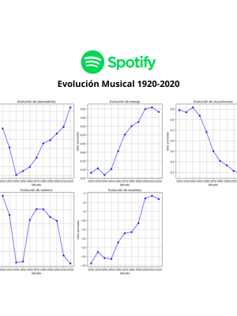
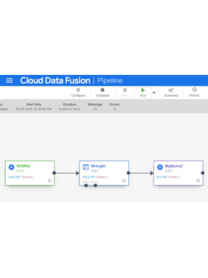

Projects

Detección de Fraude Bancario en GCP
Implementación de un sistema de detección de fraudes financieros en tiempo real usando una arquitectura Lambda en Google Cloud Platform. Se integraron Pub/Sub, Dataflow, BigQuery y BigQuery ML para el procesamiento de datos, entrenamiento automático de modelos y visualización en Looker Studio.
Detalle

Análisis Musical con Spark
Análisis de datos a gran escala utilizando Apache Spark y PySpark sobre un dataset de 600,000 canciones de Spotify. Se realizaron tareas de limpieza, análisis exploratorio, modelado predictivo de popularidad con Random Forest y desarrollo de un sistema de recomendación musical basado en clustering y filtrado colaborativo.
Detalle

Predicción del Ganador de la Eurocopa 2024
Análisis de datos cuantitativos para estimar probabilidades de victoria en la Eurocopa 2024, utilizando índices derivados del valor de mercado y experiencia internacional de las selecciones. Se aplicaron modelos de clustering (K-Means, DBSCAN, MeanShift) para agrupar países y generar probabilidades relativas. Los resultados fueron visualizados en Tableau.
Detalle

Pipeline ETL de Ventas de Automóviles en GCP
Diseñé e implementé un pipeline ETL en Google Cloud Platform para procesar y visualizar datos de ventas de automóviles. El flujo va desde archivos CSV almacenados en Cloud Storage, pasando por transformaciones en Dataproc con PySpark, hasta el análisis en BigQuery y la visualización en Looker Studio. También exploré el uso de Cloud Data Fusion como alternativa low-code para el procesamiento de datos.
Detalle